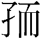
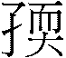
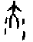
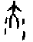
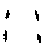
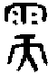
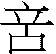
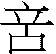

5. 需卦 水天需
5. 需卦 水天需
需，有孚，光亨，貞吉，利涉大川。初九，需于郊，利用恒，无咎。九二，需于沙，小有言，終吉。九三，需于泥，致寇至。六四，需于血，出自穴。九五，需于酒食，貞吉。上六，入于穴，有不速之客三人來，敬之，終吉。
【卦名】
今本：需 帛書：襦 歸藏：溽 上博簡：
「需」傳統解釋音義都是「須」，等待的意思。但原義也可作「濡」，沾濕之義，引申為遲滯、陷入…，讀為「如」。
帛書作「襦」，音「如」，為「濡」之假借。歸藏易作「溽」，也是借為「濡」。
上博簡卦名仍有爭議，有學者認為是，通、孺。也有學者認為是孠，即嗣的古字，也有認為應該是孕。但最可能為「」，通孺，需之假借。
需與須
《彖傳》：「需，須也。」《說文》：「需，䇓也。遇雨不進，止䇓也。从雨而聲。《易》曰：雲上於天，需。」段玉裁注曰：
《易彖傳》曰：『需，須也。』須卽䇓之叚借也。《左傳》曰『需，事之賊也』，又曰『需，事之下也』，皆待之義也，凡相待而成曰需。」「而者䇓之意，此字爲會意，各本作而聲者，非也。《公羊傳》曰：『而者何？難也。』《穀梁傳》曰：『而，緩辭也。』而爲遲緩之辭，故从而。而訓須，須通䇓，从而猶从䇓也。
「需」傳統皆依《彖傳》解釋為等待，這也是許慎《說文》所本，而《雜卦傳》也說「需，不進也」。依段玉裁說法，《象傳》「需，須也」的「須」即「䇓」的假借。「需」字從「而」，「而」訓作「須」，「須」通「䇓」，䇓即等待的意思，「需」字上從雨，代表因為遇到下雨而無法前進。
香港中文大學漢語多功能字庫支持此說，認為需字金文從雨從天，會雨天不宜出行而有所待之意。本義是下雨不能出門，得停下來等待。後世須待的「須」是「需」的假借字。
需與濡
「須」（䇓），不進，這是傳統以來對「需」卦的一貫解釋，但「需」也可當「濡」，讀作「如」，原義為沾濕，引申為遲滯、陷入…、耽溺、難進等等意思。
需卦歸藏作「溽」，溽音義皆通濡。帛書《周易》作襦，襦亦通濡，段玉裁《說文》注：「襦之言濡也，猶襗之言澤也。」既濟六四「繻有衣袽」帛本作「襦有衣茹」，王弼注「繻宜曰濡」亦可為證。帛書《易之義》作嬬，應是假借為需。
但「濡」字《說文》解釋為水名，難以解釋《周易》經義。徐中舒認為，古需、濡、儒同一字源。其《甲骨文字典》收錄的「儒」字作 或：
或：
儒：從大從或，象人沐浴濡身之形，為濡之初文。殷代金文作（父辛鼎），與甲骨文略同；周代金文譌作（盂簋）、（白公父簠），至《說文》則譌作從雨從而之篆文（需）。上古原始宗教舉行祭禮之前，司禮者須沐浴齋戒，以致誠敬，故後世以需為司禮者之專名。需本從象人形之大，因需字之義別有所專，後世復增人旁作儒，為緟事增繁之後起字。
就字形的演變來說，其中值得注意的是甲骨文從大（大為大人）從水（三點水或四點水），為大人身上有水，與需卦上坎水下乾大的卦象（乾為大或大人）完全一致。周代金文之後作，上為雨為水，下為天，也是與需卦卦象完全相符。但是到《說文》小篆開始譌變為，為上雨下而，「而」通「須」，因此需字解釋作「須」通「䇓」，也是現今主流的解釋。
就字義來說，「需」原本就兼具「儒」和「濡」的意思，也是這兩個字的本字，但後來又在文字上加一人字旁成「儒」用以專指司禮的人，此可能是儒者、儒家的由來。或加一水字旁成「濡」作沾濕，濕潤的意思，《禮記》中濡及溽字多做此解，或由「濕」所引申出的意思，如「土潤溽暑」溽作濕，「濡肉齒決」濡做濕軟（似於我們現今說的多汁）。再如《詩》「維鵜在梁，不濡其翼」，《莊子》「入水不濡，入火不熱」的「濡」都是「濕」的意思，「相濡以沫」則是從「濕」引申為「濕潤」。
「濡」引申也有等待、延遲、耽溺、難進、陷入…之義。如《孟子》：「是何濡滯也？」朱熹注：「濡滯，遲留也。」
並由耽溺再引申出飲食之欲的意思。《禮記．儒行》「其居處不淫，其飲食不溽」鄭玄注：「恣滋味為溽，溽之言欲也。」「溽」（濡）與「淫」對舉，為耽溺之義，言儒者在生活起居上不會淫逸，對於飲食會知所節制，不會耽溺、沉迷。鄭玄則以「欲」來註解。
《莊子．徐无鬼》：「濡需者，豕蝨是也，擇疏鬣自以為廣宮大囿，奎蹏曲隈，乳間股腳，自以為安室利處，不知屠者之一旦鼓臂布草操煙火，而己與豕俱焦也。此以域進，此以域退，此其所謂濡需者也。」成玄英疏：「喻流俗寡識之人，耽好情欲，與豕蝨濡需喜歡無異也。」
莊子「濡需」的濡取耽溺、飲食之欲之意，用以諷刺豬身上的蝨子耽溺、沉迷於情欲，殊不知豕亡身亦亡的命運。這裡的需則有兩解，一是飲食之需；二是通須（鬚），指豬毛（鬣），「濡需」就是「擇疏鬣自以為廣宮大囿」，耽溺於豬毛也就是蝨子自以為是的廣宮大囿裡。
總而言之，歸藏的「溽」與帛本的「襦」都通「濡」，「濡」與「需」同。做此解時「需」應讀作「如」，引申即為遲滯、耽擱、耽溺、飲食之欲。
因此，《周易》中多處的「濡」字除了可以解釋為沾濕相關引申義之外，也有遲滯、等待之隱喻。例如賁卦「賁如濡如」，濡如形容豔麗的樣子，且有因為裝飾打扮隆重而耽擱時間的意味。夬卦「遇雨若濡」為遇到下雨沾濕身體而延誤到一些行程，既濟與未濟的「濡其尾」為小狐沾濕尾巴而造成一些麻煩，阻礙了狐狸的「乞濟」。「濡其首」為喝酒喝到淋濕了頭，耽溺於酒食之義。
需字後來也演變為我們現在說的「需要」、「需求」的意思，意指人生命上有所待而不可缺乏的事物。「溽（濡）之言欲也」，濡（需）因此引申為飲食等生活上的基本需要，為人生之大欲。所以《序卦》說「需者飲食之道也」，象傳說「雲上於天，需，君子以飲食宴樂」。
【卦義】
等待時機，不宜即刻前進。二月之卦。
《雜卦》「需不進也」，《彖傳》「需，須也，險在前也」。卦序上需卦是繼屯蒙而來，就人類文明之演進來說，屯、蒙為開天闢地之後文明初開，人民草昧無知的時候，需卦講的則是解決飲食基本問題之事，所以《序卦》說：「蒙者物之稚也。物稚不可不養也，故受之以需，需者飲食之道也。」
卦象上水險下剛健，君子雖剛健而有能力，但卻有坎險阻隔，而難以前進，宜等待時機之象。水上於天成雲，雲在天上不能成雨，雨象徵的是乾彖講的「雲行雨施」，天道流形。喻人事則是開花結果。雲在天上，比喻條件未齊備，必需再等待時機成熟。
坎為溝瀆，溝瀆在外若強行渡過，則成困難險阻，若居內不動則成天險屏障。故君子雖有乾陽之德可以涉險犯難（卦辭曰「利涉大川」），但若能守靜居內則能以逸待勞，飲食宴樂，養精蓄銳。所以《象傳》說「君子以飲食宴樂」。
得需卦者，雖有剛健的德性而可以涉險行事，《彖傳》所說「剛健而不陷」，能力足以解決困難與渡過危險，但仍以退守、靜待時機才是上策，若執意行動，雖然事情或許可成，但恐會歷經一番浴血苦戰。
需，有孚，光亨，貞吉，利涉大川。
- 彖曰：需，須也，險在前也。剛健而不陷，其義不困窮矣。需，有孚，光亨，貞吉，位乎天位，以正中也。利涉大川，往有功也。
- 象曰：雲上於天，需，君子以飲食宴樂。
【今解】
等待，有誠信則能夠光明而嘉會。貞定為吉，亦宜於涉大川。
需卦乾陽在內，坎險在外，可靜可動。貞定則有利而吉，但亦可涉大川，因此卦辭說「貞吉」又說「剛健而不陷」、「利涉大川」。乾為光，故曰光亨。處需之時，誠信為上，有誠信則可光耀四方而嘉會，無誠信則否。
朱熹《本義》：「坎水在前，乾健臨之，將涉水而不輕進之象。故占者為有所待，而能有信，則光亨矣。若又得正，則吉，而利涉大川。正固无所不利，而涉川尤貴於能待，則不欲速而犯難也。 」涉大川為冒險犯難之舉，當以能夠等待為吉。得需卦雖利涉大川，但宜耐心等待，不宜求速貿進。
【字義】
有孚光亨：孚為誠信。《易經》中「孚」相當常見，並有「中孚」卦。孚通解為誠信，或保護。光亨則在讚美君子匯聚嘉美之條件，光明而亨。「亨」字上博楚簡皆作「卿」，古「卿」字即「饗」的本字，象兩人對坐飲食，為聚會用餐的樣子，宴會、饗宴之義。古亨字本通享，享亦通饗，因此「光亨」亦可解釋為饗宴，此更符合《象傳》「需，君子以飲食宴樂」之義。高亨對此有另一見解，認為應斷句為「有孚光，亨」。「有孚光」即「有浮觥」，浮為「罰」的意思，觥為酒杯，「有浮觥」指的是被罰酒。因需卦講的是飲食之道。另高亨將「亨」解釋為「享」，即享祀。
初九，需于郊，利用恒，无咎。
- 象曰：需于郊，不犯難行也。利用恒，无咎，未失常也。
【今解】
滯留於郊外，宜有恒心，沒有罪咎。
雖然眼前有危險，但若懂得耐心等待，不強行冒險，與危險保持安全距離，就可免於罪咎。
原本就六爻卦位來說，郊應該在五或上爻。此初九言郊者，因坎在外，初九距坎最遠。此言乾陽「涉大川」的邊進邊等的過程，初九至九三以距坎險之距離而言「郊」、「沙」、「泥」。郊外離坎險很遠，宜於有耐心，故曰「利用恒」。又初九爻變，下卦成巽，巽為漸進，為進退，為不果，初九若動又有進退不果之象，不宜妄動。
【字義】
- 需于郊：滯留於郊外。郊原本為郊外、城外之意，這裡則有離危險較遠的意思，隱喻應當遠離是非之地。《周易》出現郊的有小畜及小過六五「密雲不雨，自我西郊」，同人上九「同人于郊」，相近的字有「野」，坤卦上六「龍戰於野」，同人卦辭「同人於野」。郊與野都是曠遠之地，大體而言，古時城外百里內為郊，郊之外就是野。就六爻位置來說，郊野本來大致在五或上兩爻的位置，但需卦的郊在初爻，此處的「郊」是以相對於上卦坎險的距離而言。
- 利用恒：可以長久停留於郊外。恒為久遠、長久的意思。此意指要有恒心、耐心，久留於郊外為宜。六爻中初九離坎險最遠，因此宜於在此久留。若依《象傳》，利用恒為守常之義。如孔穎達：「恒，常也，遠難待時以避其害，故宜利保守其常，所以无咎，猶不能見幾速進，但得无咎而已。」
九二，需于沙，小有言，終吉。
- 象曰：需于沙，衍在中也，雖小有言，以吉終也*。 *「以吉終也」或作「終吉也」。
【今解】
滯留於沙地上，遭人言語中傷，最後為吉。
滯留於水邊的沙地。初至三為乾陽邊等待，邊視情況而前進的過程。初九距坎險遠而說需於郊，九二離水邊較近，已至河邊的沙地。九二居互體兌之下，兌為口，向下毀折，受言語中傷。九二變為離，成黃離之中，為元吉，故曰終吉。
【字義】
- 小有言：會有輕微的言語中傷。程頤：「小有言語之傷，而无大害，終得其吉也。」朱熹：「沙，則近於險矣。言語之傷，亦災害之小者。漸進近坎，故有此象。」言在《周易》中多屬負面的意思，指言語上的中傷。《説文》：「直言曰言，論難曰語，从口䇂聲，凡言之屬皆从言。」許慎以「直言」與「論難」對舉來分辨「言」、「語」，以理論、議論方式責難人就是「語」，若是直接說出來，就是「言」，因此「言」為直言之「難」。高亨認為言是
 （）之誤，因兩字古文形近，《說文》：「，語相訶歫也，从口歫䇂。䇂，惡聲也，讀若櫱。」「䇂，辠也，从干二。二，古文上字。」䇂為罪，形構為干上，即犯上之意。從口從䇂，因此為言語冒犯之義。
（）之誤，因兩字古文形近，《說文》：「，語相訶歫也，从口歫䇂。䇂，惡聲也，讀若櫱。」「䇂，辠也，从干二。二，古文上字。」䇂為罪，形構為干上，即犯上之意。從口從䇂，因此為言語冒犯之義。
- 衍在中也：內心寬裕。孔穎達：「衍謂寬衍，去難雖近，猶未逼于難，而寬衍在其中也。」
九三，需于泥，致寇至。
- 象曰：需于泥，災在外也。自我致寇，敬慎不敗也。
【今解】
滯留於水邊的泥濘裡，引來了盜賊。
九三距離水險最近，九二還在沙岸邊，再進一步就準備要涉水，九三則已踩進水邊的爛泥，為爛泥所困。象曰：「需于泥，災在外也。自我致寇，敬慎不敗也。」災在外意指坎險在外，坎為災。自我致寇，因為自己讓自己身陷險地，自曝弱點，而引來了盜賊。敬慎不敗，乾陽為大，足以禦寇，只要謹慎小心就不會失敗，可以逐退盜賊。九三近逼坎險，坎為盜，又居互卦離之下，兌之中，離為戈兵，兌為毀折，因此有致寇之象。
六四，需于血，出自穴。
- 象曰：需于血，順以聽也。
【今解】
滯留於溝瀆之中，等敵寇離開之後，離開所躲藏的洞穴。
另一解釋為，浴血奮戰（血喻受傷、處於險境），從洞穴中逃出。
六四已進入坎險之地，「濡於血」被血所沾濕，浴血之義；或滯留於血（洫）裡。血傳統講法認為是流血的血，比喻進入危險之地，因坎為血象。坎也可為溝瀆，需於血也可解釋為滯留於溝瀆，避難的意思。《象傳》說「需于血，順以聽也」，因此以躲於溝瀆的解釋最為符合。
【字義】
- 需於血：血有二義，一是流血之血，受傷之象。血亦可解釋為「洫」，溝洫的意思。傳統解釋為流血、受傷，坎於象為血，為溝瀆，為隱伏，因此兩種解釋都符合卦象卦義。需即濡，濡為沐浴或沾濕，引申為滯留、停滯。濡於血，就是浴血，血戰，「出自穴」為血戰離開洞穴。高亨認為，血為「溝洫」之洫，就是溝瀆的意思，坎為溝瀆之象，「濡於洫」講的是人因危險逃難而躲到溝洫裡，因而能夠躲過一劫。與前段爻辭「致寇至」以及後文「出自穴」成連續之故事。高亨說法最為傳神，亦符合卦象與卦義。六四已脫離內卦而至外卦，又屬於互體兌卦的上方，兌為口為洞穴，所以講出自穴。需於血與出自穴講的都是遇到危險在逃難。血亦有恤的意思，隱喻此事當有憂慮，四多懼，坎又是加憂。
- 出自穴：兌為穴。六四爻再兌上坎下，為出穴入血之爻。自古對穴有兩種完全相反的詮釋。王弼以「陰路」解釋穴，此陰路阻擋乾陽之行，陰陽相互傷害，因此有血：「凡稱血者，陰陽相傷者也。陰陽相近而不相得，陽欲進而陰塞之，則相害也。穴者，陰之路也，處坎之始，居穴者也。」《九家易》以穴為地出之處：「雲從地出，上升于天。自地出者，莫不由穴。故曰需於血出自穴也。」程頤以穴為安居之處：「四以陰柔之質處於險，而下當三陽之進，傷於險難者也，故云｢需于血｣。既傷于險難，則不能安處，必失其居，故云出自穴。穴，物之所安也。」朱熹：「血者，殺傷之地。穴者，險陷之所。」《朱子語類》：「問：《程傳》釋穴，物之所安。曰：穴是陷處，喚作所安不得。柔得正了，需而不進，故能出於坎陷。」
- 順以聽：順從。聽，從也。孔穎達：「順以聽命而得免咎也。」
九五，需于酒食，貞吉。
- 象曰：酒食貞吉，以中正也。
【今解】
滯留於酒食，享受酒食，貞定為吉。
雖然身處險中，但九五剛中，所以能夠享受酒食宴樂。《象傳》說：「需，君子以飲食宴樂。」《序卦》說：「需者飲食之道也。」九五爻是需卦的主爻，也是需卦卦義的核心，所以九五爻「需於酒食」呼應了《象傳》「君子以飲食宴樂」及《序卦》「需者飲食之道也。」。
俞琰：「酒食者，需客之具，所以待三陽之來也，唯能固守以正而不亂則吉。」朱熹：「酒食，宴樂之具，言安以待之。」酒食是待客之用，俞琰認為是等待下三陽。朱震：「坎震為酒，兌口在下，酒食之象。」
- 以中正也：五居中，九五得位而正。凡是九五和六二，都是居中得位，即具有中正之德。
上六，入于穴，有不速之客三人來，敬之終吉。
- 象曰：不速之客來，敬之終吉，雖不當位，未大失也。
【今解】
進入洞穴之中，有不請自來的客人三人來，禮敬他們，最後則吉。
【字義】
- 入於穴：進入洞穴之中。
- 不速之客：速為「召」的意思。不速之客就是不召之客，不請而突然自來的客人。速或作促，不催促他而自己來。另有一說認為，「不速之客」即小偷，「敬之」當解為「儆之」，儆為小心謹慎、預防的意思。言有小偷來，小心預防最終為吉。
- 三人來：通解以下三陽爻為「三人」。荀爽曰：「三人，謂下三陽也。」來知德：「我為主，應為客，三陽同體，客三人之象也。」程頤：「上六居險之終，終則變矣。在需之極，久而得矣。陰止於六，乃安其處，故為入于穴，穴所安也。安而既止，後者必至。不速之客三人，謂下之三陽，乾之三陽非在下之物，需時而進者也。需既極矣，故皆上進。不速，不促之而自來也。」
- 敬之：尊敬。亦可解釋為警戒。
- 雖不當位，未大失也：六為柔位，照爻位原則來說，六處上為當位，為何《小象傳》說不當位？王弼認為初與上是一卦之終始，不能以陰陽來論位：「處无位之地，不當位者也。」《周易略例．辨位》：「初上者，體之終始，事之先後也，故位无常分，事无常所，非可以陰陽定也。」上爻無位另一證明，乾卦上九《文言傳》引子曰：「貴而无位，高而无民。」
彖傳注
需，須也：須，䇓也，雨中等待的意思。《說文》：「需，䇓也。遇雨不進，止䇓也。从雨而聲。《易》曰：雲上於天，需。」需字金文從雨從天，有雨天無法出行之意。
險在前也：卦象坎卦在上，險在前之象。
剛健而不陷，其義不困窮矣：以上下二體卦象解釋需卦卦義。乾剛健，坎在內為坎陷，在外為不陷。《序卦》：「坎者陷也。」《說卦》：「坎陷也。」需卦為君子剛健而不坎陷之義，因此說「其義不困窮」。此段也可能講需卦可再與明夷旁通成既濟。乾坤旁通，乾初與三至坤四與上，成需與明夷，需九二再至明夷五成既濟定。因九二將行至明夷上卦坤中，因此講其義不困窮。至既濟則說：「剛柔正而位當也。初吉，柔得中也，終止則亂，其道窮也。」既濟《彖》傳顯然以六二為成卦之主爻，並以「其道窮」言之。
需，有孚，光亨，貞吉，位乎天位，以正中也：此以九五主爻解釋經文「需，有孚，光亨，貞吉」。九五為需卦主爻，居於五的天位，居上卦之中而當位，因此說「以正中也」。
利涉大川，往有功也：坎為大川。大川在外，剛健在內，為剛健而不坎陷之義。宜於涉大川，因前往將有功。五多功，九五中正剛強而不陷，因此往有功。